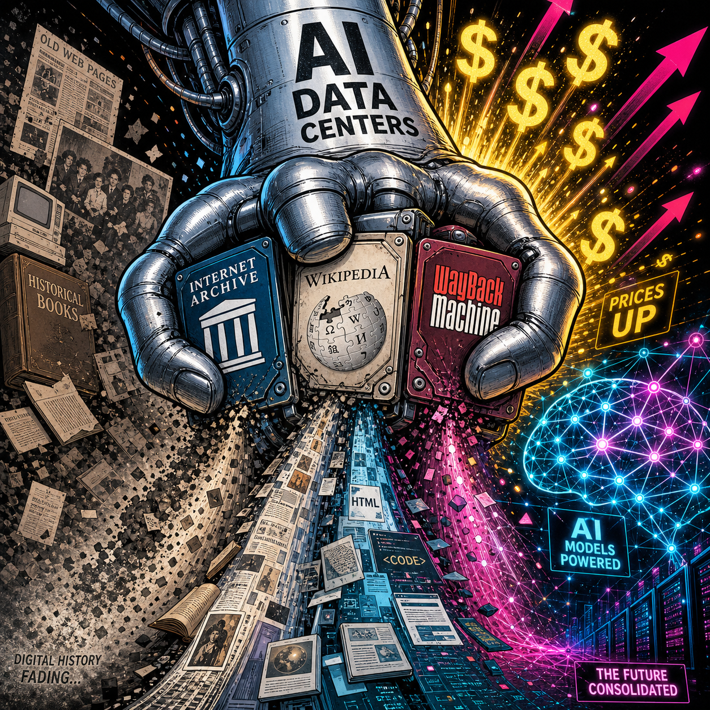

Brewster Kahle stared at the procurement spreadsheet for a solid minute.
The Internet Archive needs 30TB hard drives. Not wants. Needs. The organization ingests over 100 terabytes of new material every single day, including web pages, books, software, videos, and the entire digital record of human civilization. That adds up to 210 petabytes of archived history that future generations will access.
The drives that cost $159 last fall now cost $575. A 261 percent increase in six months. Some manufacturers like Micron have exited the consumer market entirely to serve AI data center customers. The specific 30TB drives the Archive needs are unavailable at any price for archival buyers.
Kahle called it what it is: "A very real issue costing us time and money."
This is not a temporary supply chain hiccup. This is not a pandemic-style disruption that will normalize in a quarter. This is the physical price of AI arriving all at once, and the bill is coming due in atoms, not tokens.
The AI boom is literally making it harder to save the internet. We are trading digital preservation for model training. We are choosing amnesia over history.
And almost nobody is talking about it.
PART ONE: THE NUMBERS
Let's start with what actually happened, because the scale matters.
2TB Samsung SSD: $159 (Fall 2025) to $575 (May 2026). That is not inflation. That is not normal market fluctuation. That is a fundamental restructuring of who gets to buy storage and who does not.
Micron: Exited the consumer storage market entirely. The company is now prioritizing AI data center contracts. When a major manufacturer walks away from consumers, it is not a shortage. It is a strategic reallocation of manufacturing capacity away from everyone else.
30TB HDDs: The drives the Internet Archive specifically needs are unavailable for archival buyers at any price. The Wikimedia Foundation and university libraries report the same: preferred capacities are either gone or priced beyond reach.
AI data center storage demand: Consuming over 80 percent of enterprise HDD and SSD production, and climbing.
The mechanism is straightforward. AI companies lock up production through multi-year contracts with Seagate and Western Digital. Priority allocation goes to "critical" infrastructure customers. Archives, academics, and libraries are not critical. They are discretionary.
And in a market where AI companies view storage as a rounding error against their compute budgets, where paying 10x is acceptable because GPUs are the real bottleneck, traditional buyers do not just lose. They get priced out entirely.
The Multiplier Nobody Modeled
AI training requires massive datasets on physical drives. That is the obvious part. But inference is worse: vector databases, embedding caches, retrieval systems, conversation logs. Every query to ChatGPT, Claude, or Gemini generates data that gets stored somewhere. The industry is building toward a future where every application has an AI component, which means every application generates AI-related storage overhead. The multiplier is exponential.
Manufacturing capacity is not exponential. Building a fab takes years and billions of dollars. You cannot spin up new production overnight. The result: AI data centers consume available supply, prices rise, non-AI buyers exit, and the market clears at a price point archives cannot afford.
This is not a bug. The highest payer wins. And AI companies, backed by venture capital and revenue growth, will always outbid libraries.
PART TWO: WHO LOSES
The Internet Archive
Two hundred ten petabytes of archived material. One hundred terabytes ingested daily. The Wayback Machine alone has saved over 866 billion web pages. This is not a niche hobby. It is the most complete record of the digital age that exists. Brewster Kahle founded it in 1996 and has navigated every technological shift since. He is not given to hyperbole.
His statement on the storage shortage was measured: "A very real issue costing us time and money."
What that means in practice: the Archive is making triage decisions right now. Buy fewer drives. Ingest slower. Skip certain content types. Deprecate older archives to free up capacity for new material. These are procurement questions with no good answers, and the Archive, funded by donations and grants, cannot compete with Microsoft's data center budget.
Everyone Else
The same math cascades downward.
Wikipedia runs on donations. The Foundation maintains local mirrors, distributes offline content to regions with limited internet, and archives edit histories and metadata. All of it now costs two to three times what it did six months ago. They have not issued a public statement on the storage crisis. They are absorbing the cost for now. Absorption has limits.
University libraries are quietly cancelling digitization projects. Research data preservation is being delayed indefinitely. Graduate students who would normally archive datasets as part of publication requirements are being told to delete local copies after submission. Grant applications that include storage budgets are being rejected. Some institutions are returning to "selective preservation", choosing what to save based on perceived future value, which is a polite way of saying: we are guessing what matters, and we are wrong more often than we admit.
The digital dark age, a term historians coined to describe the loss of digital records from the late 20th and early 21st centuries, is no longer theoretical. The web of 1995-2010 is already poorly preserved. The web of 2015-2025 is at risk. The web of 2026 onward is being built on infrastructure that may not survive.
PART THREE: THE PARADOX
Here is the part that should keep you up at night.
AI models are trained on internet data: web pages, books, code repositories, forums, documentation, the entire digital record of human knowledge up to the model's training cutoff. That data is preserved on hard drives.
AI demand makes hard drives unaffordable for the institutions that preserve that data.
Future AI models will have less training data because we cannot save current history.
We are building machines that consume the past to generate the future, and we are making it impossible to preserve the present for the next generation of machines. The feedback loop is vicious: more AI means more storage demand, which means higher prices, which means less preservation, which means less training data for future AI, which means potentially worse models.
Nobody has modeled this. Nobody has published research on the long-term implications. The industry is moving too fast to ask the question.
The Concrete Version
Salvatore Sanfilippo, the creator of Redis, published a blog post on May 4, 2026. He spent four months building a new Array data type using AI throughout. He said it let him go further than he otherwise would have.
Simon Willison read that post. He used Claude Code to build an interactive playground for the new Redis feature in a browser, on his phone, the same day, in a tent. This is what is possible now. The barrier to building has collapsed.

But if the Internet Archive cannot afford hard drives, in twenty years nobody will remember what Redis was. The documentation will decay. The blog posts will vanish. Future developers will use Redis as a black box. They will rebuild it poorly because the original context is gone.
This has happened before. The digital dark age of the 1980s and 1990s gave us software with no surviving source code, documentation that vanished, and platforms that no longer run. Historians struggle to study early computing because the primary sources do not exist.
We are doing it again. On purpose. With full knowledge of the consequences.
PART FOUR: GLIMMERS
This is not hopeless. People are working on it. Just not enough people.
Distributed storage networks. IPFS, Arweave, and Storj offer alternatives to centralized providers. IPFS uses content-addressing so that data lives wherever someone is willing to host it rather than on a single company's drives. Arweave promises permanent, pay-once storage with an endowment model. Storj distributes encrypted fragments across a global network of node operators. None are perfect. None have the scale to replace the Internet Archive. But they are infrastructure that does not depend on a single buyer winning a bidding war against OpenAI.
The Software Heritage project has archived over 20 billion source files from 250 million projects. It is building the Library of Alexandria for code, and it operates on academic and government funding, not market dynamics. It is proof that preservation models outside the market exist.
The Internet Archive itself is not standing still. The organization is exploring distributed preservation partnerships, working with universities to host mirror copies, and advocating quietly but persistently for storage to be treated as critical infrastructure rather than a commodity.
The problem is not that no solutions exist. It is that none of them are funded at the scale of the threat.
PART FIVE: BE INTELLECTUALLY HONEST
I need to say this clearly.
This is not anti-AI. The technology is real. The capabilities are genuine. I am not calling for a halt.
This is not anti-progress. Innovation requires tradeoffs. The printing press disrupted scribes. The automobile disrupted stable hands. AI will disrupt workers. Seeing the tradeoff is not the same as opposing the change.
This is infrastructure accountability.
AI's physical costs are real and externalized. The industry talks about tokens and models and benchmarks. It does not talk about the hard drives, the power substations, the cooling systems, the physical plant that makes AI possible.
When those costs spill over into other domains, when archives cannot afford drives, when libraries cut digitization projects, when students delete datasets they were supposed to preserve, that is an externality. The AI industry is not paying for it. The public is.
And here is the uncomfortable question.
If AI is so profitable, why are these companies not funding archival storage as a public good?
They are using the internet's history to train their models. The Wayback Machine is part of Common Crawl. Wikipedia is in every major model's training data. Books, code, forums, all of it feeds the machines.
Are they giving back? Or just taking?
OpenAI has not announced any archival partnership. Anthropic has not funded preservation infrastructure. Google DeepMind has not endowed storage for academic archives. Maybe they are working on it quietly. But if they are, they are not talking about it. The silence is the answer.
PART SIX: WHAT TO ACTUALLY DO
Four things. In order of leverage.
One: Fund the Internet Archive. They are underfunded and under siege. A donation, any amount, directly funds hard drives. This is not charity. It is paying for the infrastructure that keeps digital history alive.
Two: Treat storage as strategic infrastructure. If you are building AI infrastructure yourself, buy drives now. The supply-demand imbalance is not correcting. Cloud storage pricing (S3, GCS, Azure Blob) will pass infrastructure costs to you. The increases have not fully hit yet. When they do, they will not be gradual. If you have critical data, keep local copies. The cloud is for distribution, not preservation.
Three: Use open formats. PDF/A for documents. WARC for web archives. Open formats survive platform decay. Proprietary formats tie you to vendors. Vendors fail.
Four: Advocate for one specific policy. A national digital preservation fund, modeled on the Library of Congress's existing mandate but extended to born-digital materials. Or, more creatively, an AI inference tax: a fraction of a cent per query, pooled into a preservation endowment, administered independently of the companies that fund it. Pick whichever model you find more plausible and push for it. The specific mechanism matters less than the principle: AI companies that consume the public record should pay to preserve it.
CLOSING
The people who used to explain what AI can do are now showing what AI can do. The builders are building faster than ever. This is real. This is good.
But if the Internet Archive cannot afford hard drives, nobody will remember what they built.
We are choosing to build the future without saving the present. That is not progress. That is amnesia. We can fix it.
The critics did not stop caring about AI. They just found something more useful to do with it.
The archivists did not stop caring about history. They just ran out of money.
Get More Articles Like This
I write about AI infrastructure, digital preservation, and the physical costs nobody wants to talk about. No hype, just real analysis from someone watching the infrastructure layer.
Subscribe to receive updates when we publish new content. No spam, just real lessons from the trenches.